Introduction
Course Admin
- PEs
- Sign up for attendance for lectures
- Practical/ Q&A sessions
Outline
- Understand linear regression with one predictor
- Understand how we assess the fit of a regression model
- Total sum of squares
- Model sum of squares
- Residual sum of squares
- \(F\)
- \(R^2\)
- Know how to do regression using R
- Interpret a regression model
Quiz
Question 1
Question 2
Question 3
Linear regression
Table of info
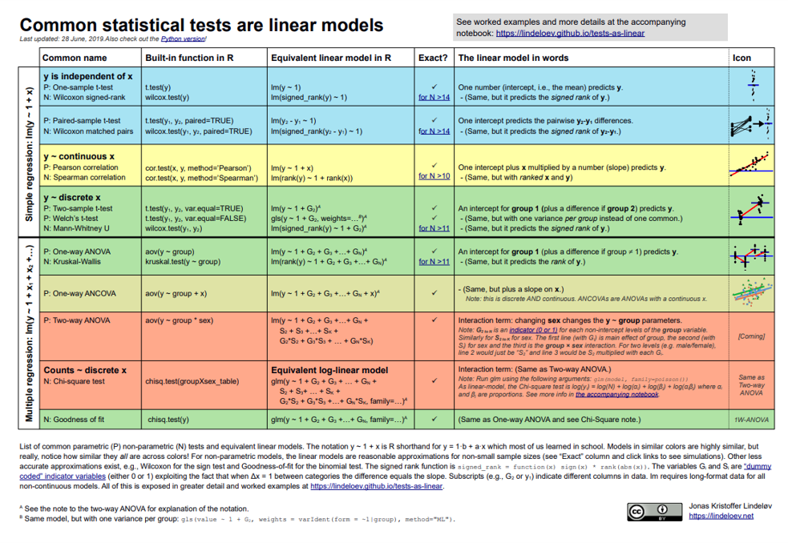
List of common parametric (P) non-parametric (N) tests and equivalent linear models. The notationy-1+xisRshorthand fory=1-b+ax which most of us leamed in school. Models in similar colors are highly similar, but really, notice how similar they all are across colors! For non-parametric models, the linear models are reasonable approximations for non-small sample sizes (see “Exact” column and click links to see simulations). Other less accurate approximations exist, e.g., Wilcoxon for the sign test and Goodness-of-fit for the binomial test. The signed rank function is \(signed_rank-function(x) = sign (x)*rank (abs (x) )\). The variables G, and S, are “dummy coded” indicator variables (either 0 or 1) exploiting the fact that when \(\Delta x=1\) between categories the difference equals the slope. Subscripts (e.g, \(G_2\) or \(Y_1\).) indicate different columns in data. LM requires long-format data for all non-continuous models. All of this is exposed in greater detail and worked examples at https://lindeloev.github.io/tests-as-linear
Different types of correlation relationships

What is Regression?
- A way of predicting the value of one variable from another.
- It is a hypothetical model of the relationship between two variables.
- Typically, both are interval scale variables
- The model used is a linear one.
- Therefore, we describe the relationship using the equation of a straight line. \(y=\color{Red}mx+\color{blue}b\)
- It is a hypothetical model of the relationship between two variables.
\(y=\color{Red}3x+\color{blue}5\)

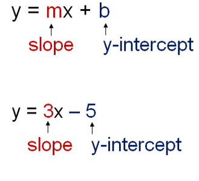
Describing a Straight Line
\[Y_i = b_0 +b_iX_i+\epsilon_i\]
- \(b_i\)
- Regression coefficient for the predictor
- Gradient (slope) of the regression line
- Direction/strength of relationship
- \(b_0\)
- Intercept (value of Y when X = 0)
- Point at which the regression line crosses the Y-axis (ordinate)
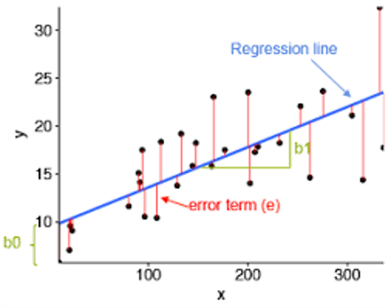
Four different types of slopes
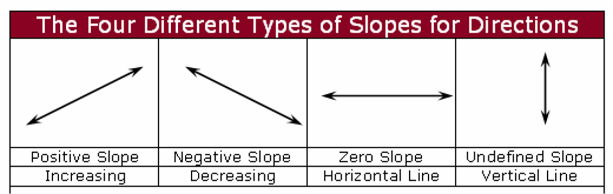
Ordinary Least Squares
- Our coefficient estimates \(b_0\) and \(b_i\) are determined based on minimizing the difference between the observed data and the value predicted by the linear approximation
- Minimizing the sum of square residuals
- Other methods exist (e.g., loglikelihood, maximum likelihood)
This graph shows a scatterplot of some data with a line representing the general trend. The vertical lines (dotted) represent the differences (or residuals) between the line and the actual data:
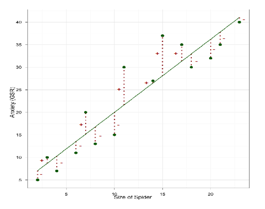
How Good Is the Model?
- The regression line is only a model based on the data.
- This model might not reflect reality.
- We need to test how well the model fits the observed data.
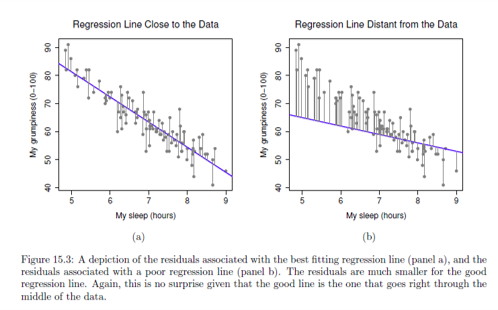
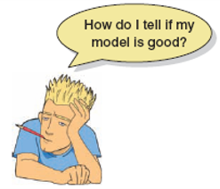
Sum of Squares
Diagram showing from where the regression sums of squares derive:
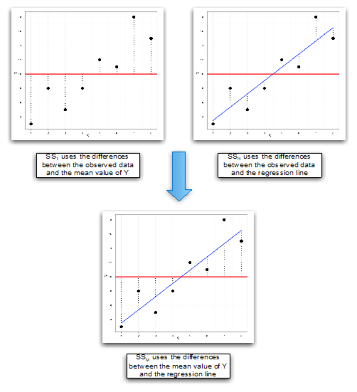
Standardized vs unstandardized regression coefficients
- Unstandardized
- \(\beta\) coef is amount by which our dependent variable changes if we change the independent variable by one unit while keeping other independent variables constant.
- Standardize Beta
- Measured in units of standard deviation. A beta value of 1.25 indicates that a change of one standard deviation in the independent variable results in a 1.25 standard deviations increase in the dependent variable.
- Similar to partial r
Beta: \[\beta_{x_1}=\frac{r_{yx_1}-r_{yx_2}r_{x_1x_2}}{1-r^2_{x_1x_2}}\]
Partial r: \[r_{yx_1x_2}=\frac{r_{yx_1}-r_{yx_2}r_{x_1x_2}}{\sqrt{(1-r^2_{x_1x_2})(1-r^2_{yx_2})}}\]
Sum of Squares Types
- \(SS_{Total}\)
- Total variability (variability between scores and the mean).
- \(SS_{Total}=\sum(y_i-\overline{y})^2\)
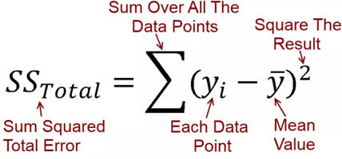
- \(SS_{Residual}\)
- Residual/error variability (variability between the regression model and the actual data).
- \(SS_{res}=\sum(Y_i-\hat{Y_i})^2\)
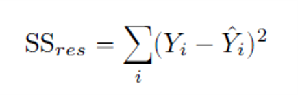
- \(SS_{Model}\)
- Model variability (difference in variability between the model and the mean).
- \(SS_{mod}=SS_{tot}-SS_{res}\)
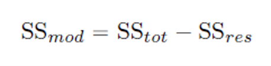
Testing the Model: ANOVA
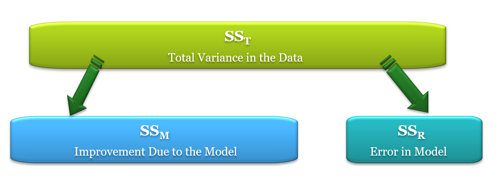
If the model results in better prediction than using the mean, then we expect \(SS_M\) to be much greater than \(SS_R\)
Testing the Model: ANOVA
- Mean squared error
- Sums of squares are total values.
- They can be expressed as averages.
- These are called mean squares, MS.
\[F=\frac{MS_M}{MS_R}\]
\[MS_{mod}=\frac{SS_{mod}}{df_{mod}}\] \[MS_{res}=\frac{SS_{res}}{df_{res}}\] \[df_{mod}=K\] \[df_{res}=N-K-1\]
K = Number of predictor variables in model
Testing the Model: R squared
- \(R^2\)
- The proportion of variance accounted for by the regression model.
- Pearson Correlation Coefficient Squared
\[R^2=\frac{SS_M}{SS_T}\] \[R^2=1-\frac{SS_{res}}{SS_{tot}}\]
Regression: An Example
- A record company boss was interested in predicting record sales from advertising.
- Data
- 200 different album releases
- Outcome variable:
- Sales (CDs and downloads) in the week after release
- Predictor variable:
- The amount (in units of £1000) spent promoting the record before release.
An Example hypothesis
- Testing the whole model
- Null hypothesis: There is no relationship between the predictors and the outcome.
- Testing individual coefficients
- Null hypothesis: The true population regression coefficient is 0.
\[H_0: Y_i = b_0 + \epsilon_i\] \[H_0: b=0\] \[H_1: b\neq0\] \[\hat{t}=\frac{\hat{b}}{SE(\hat{b})}\]
Regression in R
We run a regression analysis using the lm() function – lm stands for ‘linear model’. This function takes the general form:
newModel<-lm(outcome ~ predictor(s), data = dataFrame, na.action = an action))
albumSales.1 <- lm(album1\(sales ~ album1\)adverts)
Or we can tell R what dataframe to use (using data = nameOfDataFrame), and then specify the variables without the dataFrameName$ before them:
- albumSales.1 <- lm(sales ~ adverts, data = album1)
Load the data
In this online coding environment it’s not needed to load the data, because they are pre-loaded. However, do not forget to load the data and libraries when running R studio on your computer!
#Load the data albumsales1<-read.delim("Album Sales 1.dat",header=TRUE)#storeOutput of a Simple Regression
- We have created an object called albumSales.1 that contains the results of our analysis. We can show the object by executing:
- summary(albumSales.1)
Coefficients: Estimate Std. Error t value Pr(>|t|)
(Intercept) 1.341e+02 7.537e+00 17.799 <2e-16 adverts 9.612e-02 9.632e-03 9.979 <2e-16
Signif. codes: 0 ‘’ 0.001 ‘’ 0.01 ‘’ 0.05 ‘.’ 0.1 ‘ ’ 1
- Residual standard error: 65.99 on 198 degrees of freedom
- Multiple R-squared: 0.3346, Adjusted R-squared: 0.3313
- F-statistic: 99.59 on 1 and 198 DF, p-value: < 2.2e-16
2. Run a linear regression model
#run linear regression modelalbumsalesmod1<-lm(sales~adverts,data=albumsales1)
summary(albumsalesmod1)#storeStandardizing in R
- Standardizing using a function:
QuantPsyc::lm.beta(albumsalesmod1)
- Standardize in our model:
- albumsalesmod2<-lm(scale(sales)~scale(adverts),data=albumsales1)
- summary(albumsalesmod2)
3. Standardizing the coefficients
#standarizeQuantPsyc::lm.beta(albumsalesmod1)
albumsalesmod2<-lm(scale(sales)~scale(adverts),data=albumsales1)
summary(albumsalesmod2)#store4. Make a nice plot
#make a plot using ggplot2require(ggplot2)
scatter <- ggplot(albumsales1, aes(adverts, sales))
scatter + geom_point() + geom_smooth(method = "lm", colour = "salmon",alpha = 0.1, fill = "Red") + labs(title="Regression Example",x = "Amount Spent on Advertisement in units of ?1000",y = "Sales of CDs and Downloads")#storeMaking predictions with our Model
\[Record\ Sales_i = b_0+b_1Advertising\ Budget_i\\ =134.14+(0.09612\times Advertising\ Budget_i)\]
\[Record\ Sales_i = 134.14+(0.09612\times Advertising\ Budget_i)\\ =134.14+(0.09612\times 100)\\ =143.75\]
Example Regression Write Up
The amounts of money spent on advertising not only explained a significant 33% of the variance in record sales (\(R^2\) = .33, F(1, 198) = 99.59, p < .001), but it also significantly predicted album sales, b = .096, t(198) = 9.98, p < .001.
Exercise 2: Run your own regression on exam anxiety data
- Load the Exam Anxiety.dat file into R.
- Make a prediction about the relationship between exam anxiety and exam performance
- Run a linear regression using the lm() function
- Interpret the output
- Get the standardized beta coefficients
- Bonus create a scatter plot with the regression line
- Write a summary report of the results
1. Load the data
1. Creating two variables
#Require exam_data<-read.delim(file="Exam Anxiety.dat",header=TRUE)#store2. Run a linear regression model
#Require exam_data$Exam <- as.numeric(exam_data$Exam)
exam_datamod<-lm(Exam ~ Anxiety,data=exam_data)
summary(exam_datamod)#store3. Make a nice plot
#make a plot, use ggplot2, and quantpsyc:: require(ggplot2)
scatter <- ggplot(exam_data, aes(Anxiety, Exam))
scatter + geom_point() + geom_smooth(method = "lm", colour = "salmon",alpha = 0.1, fill = "Red") + labs(title="Regression Exercise",x = "Anxiety about the Exam",y = "Exam Performance %")
QuantPsyc::lm.beta(exam_datamod)
plot(exam_data$Anxiety,exam_data$Exam)
abline(exam_datamod)#storeConclusion
Suming Up
- Understand linear regression with one predictor
- Understand how we assess the fit of a regression model
- Total sum of squares
- Model sum of squares
- Residual sum of squares
- \(F\)
- \(R^2\)
- Know how to do regression using R
- Interpret a regression model